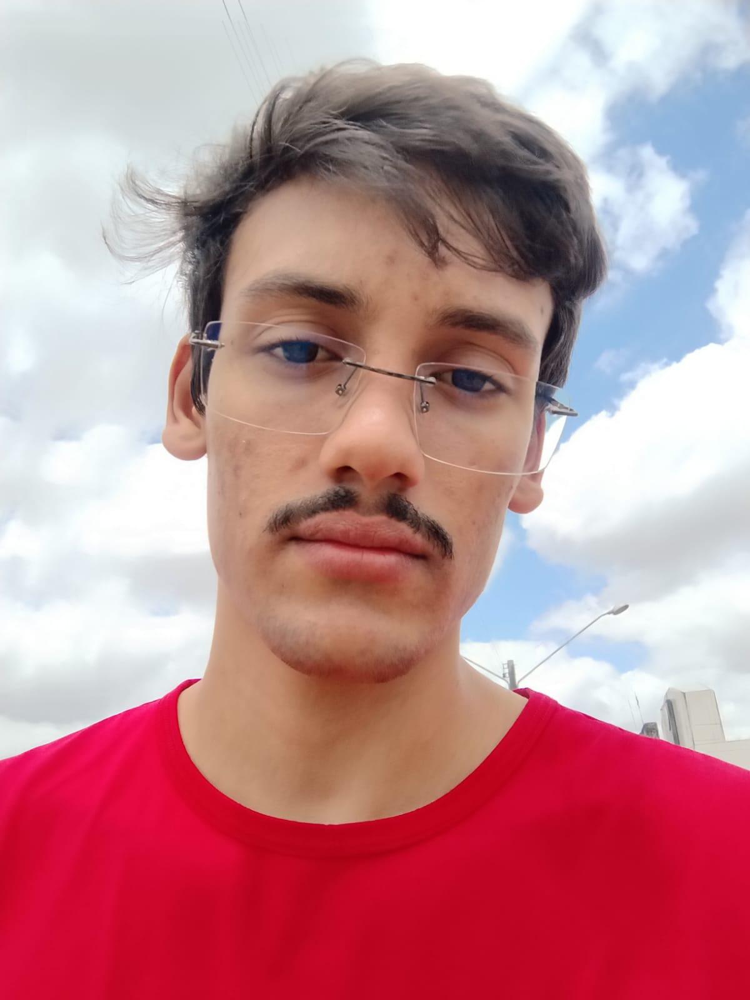

Sou um jovem
de 21 anos que gosta de esportes, games e tech.
No meu tempo livre,
gosto de ler sobre comunicação, desev. pessoal...
Lucas Gomes | 21 Anos | Engenharia da Computação
Apaixonado por tecnologia e foca em áreas como desenvolvimento de software, IA e segurança cibernética. Matemática aplicada e estrutura de dados, com uma mentalidade inovadora para enfrentar desafios na área tecnológica.

Aquiles de Melo | 18 anos | Sistemas de Informação
Profissional focado, com rápida aprendizagem e boa comunicação. Busca o primeiro emprego para aplicar habilidades e contribuir de forma proativa. Ensino médio completo.
Vinicius Barbosa | 18 anos | Sistemas de Informação
Apaixonado por jogos, futebol e rock, está se preparando para iniciar experiências profissionais e estágio durante a faculdade. Possui ensino médio completo e está cursando ensino superior.
Luiz Henrique | 19 Anos | Sistemas de Informação
Apaixonado por esportes, games e tecnologia, tem experiência no e-commerce da Oculum e busca se desenvolver em programação e desenvolvimento de sistemas.
Pedro Eduardo | 17 Anos | Engenharia da Computação
Sou Atleta de Futsal do Santa Cruz e da Uninassau. Sou uma pessoa que vive a atividade física,sempre na academia,gosto de praia,conversar,moro sozinho